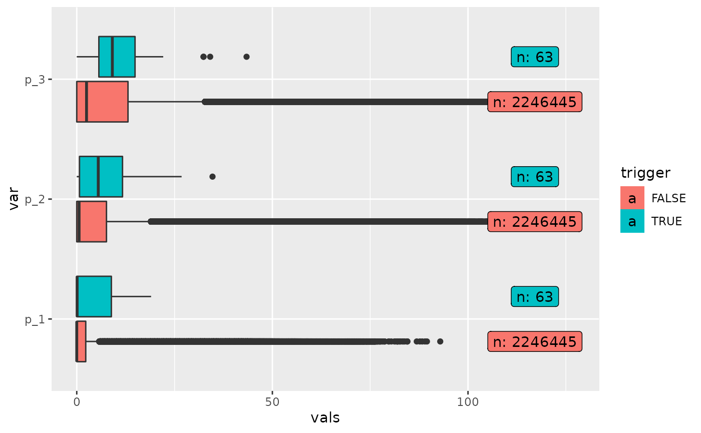

ant_rainfall.Rmd
library(rainfallR)
library(tidyverse)
#> ── Attaching packages ─────────────────────────────────────── tidyverse 1.3.0 ──
#> ✓ ggplot2 3.3.3 ✓ purrr 0.3.4
#> ✓ tibble 3.1.3 ✓ dplyr 1.0.7
#> ✓ tidyr 1.1.3 ✓ stringr 1.4.0
#> ✓ readr 1.4.0 ✓ forcats 0.5.0
#> ── Conflicts ────────────────────────────────────────── tidyverse_conflicts() ──
#> x dplyr::filter() masks stats::filter()
#> x dplyr::lag() masks stats::lag()
library(sf)
#> Linking to GEOS 3.8.0, GDAL 3.0.4, PROJ 7.0.0
library(glue)
#>
#> Attaching package: 'glue'
#> The following object is masked from 'package:dplyr':
#>
#> collapse
library(future)
path = "~/Desktop/dopt_fin.Rda"
load(path) # will create a variable called dopt
dopt[["eidee"]] = 1:nrow(dopt)
# find year with most date inforamtion
dopt %>%
filter(!is.na(date)) %>%
mutate(
y = lubridate::year(date)
) %>%
group_by(y) %>%
summarise(n = n()) %>%
arrange(desc(n))
#> # A tibble: 20 × 2
#> y n
#> <dbl> <int>
#> 1 2020 105
#> 2 2008 63
#> 3 2019 50
#> 4 2000 32
#> 5 2018 32
#> 6 2007 28
#> 7 2014 25
#> 8 2002 23
#> 9 2012 22
#> 10 2016 21
#> 11 2013 20
#> 12 2005 18
#> 13 2017 14
#> 14 2001 9
#> 15 2004 9
#> 16 2006 9
#> 17 2009 8
#> 18 2010 5
#> 19 2011 2
#> 20 2015 2
dopt=st_as_sf(dopt, coords=c("x", "y"), crs=32632)
start = Sys.time()
res = get_ant_rainfall(
dopt,
id = "eidee",
date_landslide = "date",
vars = c(1,2,3),
parallel = F,
dates_for_vars = seq(as.Date("2008-01-01"), as.Date("2008-12-31"), by="day")
)
#> Getting the variables for: 2008-01-01 ...
#> Getting the variables for: 2008-01-02 ...
#> Getting the variables for: 2008-01-03 ...
#> Getting the variables for: 2008-01-04 ...
#> Getting the variables for: 2008-01-05 ...
#> Getting the variables for: 2008-01-06 ...
#> Getting the variables for: 2008-01-07 ...
#> Getting the variables for: 2008-01-08 ...
#> Getting the variables for: 2008-01-09 ...
#> Getting the variables for: 2008-01-10 ...
#> Getting the variables for: 2008-01-11 ...
#> Getting the variables for: 2008-01-12 ...
#> Getting the variables for: 2008-01-13 ...
#> Getting the variables for: 2008-01-14 ...
#> Getting the variables for: 2008-01-15 ...
#> Getting the variables for: 2008-01-16 ...
#> Getting the variables for: 2008-01-17 ...
#> Getting the variables for: 2008-01-18 ...
#> Getting the variables for: 2008-01-19 ...
#> Getting the variables for: 2008-01-20 ...
#> Getting the variables for: 2008-01-21 ...
#> Getting the variables for: 2008-01-22 ...
#> Getting the variables for: 2008-01-23 ...
#> Getting the variables for: 2008-01-24 ...
#> Getting the variables for: 2008-01-25 ...
#> Getting the variables for: 2008-01-26 ...
#> Getting the variables for: 2008-01-27 ...
#> Getting the variables for: 2008-01-28 ...
#> Getting the variables for: 2008-01-29 ...
#> Getting the variables for: 2008-01-30 ...
#> Getting the variables for: 2008-01-31 ...
#> Getting the variables for: 2008-02-01 ...
#> Getting the variables for: 2008-02-02 ...
#> Getting the variables for: 2008-02-03 ...
#> Getting the variables for: 2008-02-04 ...
#> Getting the variables for: 2008-02-05 ...
#> Getting the variables for: 2008-02-06 ...
#> Getting the variables for: 2008-02-07 ...
#> Getting the variables for: 2008-02-08 ...
#> Getting the variables for: 2008-02-09 ...
#> Getting the variables for: 2008-02-10 ...
#> Getting the variables for: 2008-02-11 ...
#> Getting the variables for: 2008-02-12 ...
#> Getting the variables for: 2008-02-13 ...
#> Getting the variables for: 2008-02-14 ...
#> Getting the variables for: 2008-02-15 ...
#> Getting the variables for: 2008-02-16 ...
#> Getting the variables for: 2008-02-17 ...
#> Getting the variables for: 2008-02-18 ...
#> Getting the variables for: 2008-02-19 ...
#> Getting the variables for: 2008-02-20 ...
#> Getting the variables for: 2008-02-21 ...
#> Getting the variables for: 2008-02-22 ...
#> Getting the variables for: 2008-02-23 ...
#> Getting the variables for: 2008-02-24 ...
#> Getting the variables for: 2008-02-25 ...
#> Getting the variables for: 2008-02-26 ...
#> Getting the variables for: 2008-02-27 ...
#> Getting the variables for: 2008-02-28 ...
#> Getting the variables for: 2008-02-29 ...
#> Getting the variables for: 2008-03-01 ...
#> Getting the variables for: 2008-03-02 ...
#> Getting the variables for: 2008-03-03 ...
#> Getting the variables for: 2008-03-04 ...
#> Getting the variables for: 2008-03-05 ...
#> Getting the variables for: 2008-03-06 ...
#> Getting the variables for: 2008-03-07 ...
#> Getting the variables for: 2008-03-08 ...
#> Getting the variables for: 2008-03-09 ...
#> Getting the variables for: 2008-03-10 ...
#> Getting the variables for: 2008-03-11 ...
#> Getting the variables for: 2008-03-12 ...
#> Getting the variables for: 2008-03-13 ...
#> Getting the variables for: 2008-03-14 ...
#> Getting the variables for: 2008-03-15 ...
#> Getting the variables for: 2008-03-16 ...
#> Getting the variables for: 2008-03-17 ...
#> Getting the variables for: 2008-03-18 ...
#> Getting the variables for: 2008-03-19 ...
#> Getting the variables for: 2008-03-20 ...
#> Getting the variables for: 2008-03-21 ...
#> Getting the variables for: 2008-03-22 ...
#> Getting the variables for: 2008-03-23 ...
#> Getting the variables for: 2008-03-24 ...
#> Getting the variables for: 2008-03-25 ...
#> Getting the variables for: 2008-03-26 ...
#> Getting the variables for: 2008-03-27 ...
#> Getting the variables for: 2008-03-28 ...
#> Getting the variables for: 2008-03-29 ...
#> Getting the variables for: 2008-03-30 ...
#> Getting the variables for: 2008-03-31 ...
#> Getting the variables for: 2008-04-01 ...
#> Getting the variables for: 2008-04-02 ...
#> Getting the variables for: 2008-04-03 ...
#> Getting the variables for: 2008-04-04 ...
#> Getting the variables for: 2008-04-05 ...
#> Getting the variables for: 2008-04-06 ...
#> Getting the variables for: 2008-04-07 ...
#> Getting the variables for: 2008-04-08 ...
#> Getting the variables for: 2008-04-09 ...
#> Getting the variables for: 2008-04-10 ...
#> Getting the variables for: 2008-04-11 ...
#> Getting the variables for: 2008-04-12 ...
#> Getting the variables for: 2008-04-13 ...
#> Getting the variables for: 2008-04-14 ...
#> Getting the variables for: 2008-04-15 ...
#> Getting the variables for: 2008-04-16 ...
#> Getting the variables for: 2008-04-17 ...
#> Getting the variables for: 2008-04-18 ...
#> Getting the variables for: 2008-04-19 ...
#> Getting the variables for: 2008-04-20 ...
#> Getting the variables for: 2008-04-21 ...
#> Getting the variables for: 2008-04-22 ...
#> Getting the variables for: 2008-04-23 ...
#> Getting the variables for: 2008-04-24 ...
#> Getting the variables for: 2008-04-25 ...
#> Getting the variables for: 2008-04-26 ...
#> Getting the variables for: 2008-04-27 ...
#> Getting the variables for: 2008-04-28 ...
#> Getting the variables for: 2008-04-29 ...
#> Getting the variables for: 2008-04-30 ...
#> Getting the variables for: 2008-05-01 ...
#> Getting the variables for: 2008-05-02 ...
#> Getting the variables for: 2008-05-03 ...
#> Getting the variables for: 2008-05-04 ...
#> Getting the variables for: 2008-05-05 ...
#> Getting the variables for: 2008-05-06 ...
#> Getting the variables for: 2008-05-07 ...
#> Getting the variables for: 2008-05-08 ...
#> Getting the variables for: 2008-05-09 ...
#> Getting the variables for: 2008-05-10 ...
#> Getting the variables for: 2008-05-11 ...
#> Getting the variables for: 2008-05-12 ...
#> Getting the variables for: 2008-05-13 ...
#> Getting the variables for: 2008-05-14 ...
#> Getting the variables for: 2008-05-15 ...
#> Getting the variables for: 2008-05-16 ...
#> Getting the variables for: 2008-05-17 ...
#> Getting the variables for: 2008-05-18 ...
#> Getting the variables for: 2008-05-19 ...
#> Getting the variables for: 2008-05-20 ...
#> Getting the variables for: 2008-05-21 ...
#> Getting the variables for: 2008-05-22 ...
#> Getting the variables for: 2008-05-23 ...
#> Getting the variables for: 2008-05-24 ...
#> Getting the variables for: 2008-05-25 ...
#> Getting the variables for: 2008-05-26 ...
#> Getting the variables for: 2008-05-27 ...
#> Getting the variables for: 2008-05-28 ...
#> Getting the variables for: 2008-05-29 ...
#> Getting the variables for: 2008-05-30 ...
#> Getting the variables for: 2008-05-31 ...
#> Getting the variables for: 2008-06-01 ...
#> Getting the variables for: 2008-06-02 ...
#> Getting the variables for: 2008-06-03 ...
#> Getting the variables for: 2008-06-04 ...
#> Getting the variables for: 2008-06-05 ...
#> Getting the variables for: 2008-06-06 ...
#> Getting the variables for: 2008-06-07 ...
#> Getting the variables for: 2008-06-08 ...
#> Getting the variables for: 2008-06-09 ...
#> Getting the variables for: 2008-06-10 ...
#> Getting the variables for: 2008-06-11 ...
#> Getting the variables for: 2008-06-12 ...
#> Getting the variables for: 2008-06-13 ...
#> Getting the variables for: 2008-06-14 ...
#> Getting the variables for: 2008-06-15 ...
#> Getting the variables for: 2008-06-16 ...
#> Getting the variables for: 2008-06-17 ...
#> Getting the variables for: 2008-06-18 ...
#> Getting the variables for: 2008-06-19 ...
#> Getting the variables for: 2008-06-20 ...
#> Getting the variables for: 2008-06-21 ...
#> Getting the variables for: 2008-06-22 ...
#> Getting the variables for: 2008-06-23 ...
#> Getting the variables for: 2008-06-24 ...
#> Getting the variables for: 2008-06-25 ...
#> Getting the variables for: 2008-06-26 ...
#> Getting the variables for: 2008-06-27 ...
#> Getting the variables for: 2008-06-28 ...
#> Getting the variables for: 2008-06-29 ...
#> Getting the variables for: 2008-06-30 ...
#> Getting the variables for: 2008-07-01 ...
#> Getting the variables for: 2008-07-02 ...
#> Getting the variables for: 2008-07-03 ...
#> Getting the variables for: 2008-07-04 ...
#> Getting the variables for: 2008-07-05 ...
#> Getting the variables for: 2008-07-06 ...
#> Getting the variables for: 2008-07-07 ...
#> Getting the variables for: 2008-07-08 ...
#> Getting the variables for: 2008-07-09 ...
#> Getting the variables for: 2008-07-10 ...
#> Getting the variables for: 2008-07-11 ...
#> Getting the variables for: 2008-07-12 ...
#> Getting the variables for: 2008-07-13 ...
#> Getting the variables for: 2008-07-14 ...
#> Getting the variables for: 2008-07-15 ...
#> Getting the variables for: 2008-07-16 ...
#> Getting the variables for: 2008-07-17 ...
#> Getting the variables for: 2008-07-18 ...
#> Getting the variables for: 2008-07-19 ...
#> Getting the variables for: 2008-07-20 ...
#> Getting the variables for: 2008-07-21 ...
#> Getting the variables for: 2008-07-22 ...
#> Getting the variables for: 2008-07-23 ...
#> Getting the variables for: 2008-07-24 ...
#> Getting the variables for: 2008-07-25 ...
#> Getting the variables for: 2008-07-26 ...
#> Getting the variables for: 2008-07-27 ...
#> Getting the variables for: 2008-07-28 ...
#> Getting the variables for: 2008-07-29 ...
#> Getting the variables for: 2008-07-30 ...
#> Getting the variables for: 2008-07-31 ...
#> Getting the variables for: 2008-08-01 ...
#> Getting the variables for: 2008-08-02 ...
#> Getting the variables for: 2008-08-03 ...
#> Getting the variables for: 2008-08-04 ...
#> Getting the variables for: 2008-08-05 ...
#> Getting the variables for: 2008-08-06 ...
#> Getting the variables for: 2008-08-07 ...
#> Getting the variables for: 2008-08-08 ...
#> Getting the variables for: 2008-08-09 ...
#> Getting the variables for: 2008-08-10 ...
#> Getting the variables for: 2008-08-11 ...
#> Getting the variables for: 2008-08-12 ...
#> Getting the variables for: 2008-08-13 ...
#> Getting the variables for: 2008-08-14 ...
#> Getting the variables for: 2008-08-15 ...
#> Getting the variables for: 2008-08-16 ...
#> Getting the variables for: 2008-08-17 ...
#> Getting the variables for: 2008-08-18 ...
#> Getting the variables for: 2008-08-19 ...
#> Getting the variables for: 2008-08-20 ...
#> Getting the variables for: 2008-08-21 ...
#> Getting the variables for: 2008-08-22 ...
#> Getting the variables for: 2008-08-23 ...
#> Getting the variables for: 2008-08-24 ...
#> Getting the variables for: 2008-08-25 ...
#> Getting the variables for: 2008-08-26 ...
#> Getting the variables for: 2008-08-27 ...
#> Getting the variables for: 2008-08-28 ...
#> Getting the variables for: 2008-08-29 ...
#> Getting the variables for: 2008-08-30 ...
#> Getting the variables for: 2008-08-31 ...
#> Getting the variables for: 2008-09-01 ...
#> Getting the variables for: 2008-09-02 ...
#> Getting the variables for: 2008-09-03 ...
#> Getting the variables for: 2008-09-04 ...
#> Getting the variables for: 2008-09-05 ...
#> Getting the variables for: 2008-09-06 ...
#> Getting the variables for: 2008-09-07 ...
#> Getting the variables for: 2008-09-08 ...
#> Getting the variables for: 2008-09-09 ...
#> Getting the variables for: 2008-09-10 ...
#> Getting the variables for: 2008-09-11 ...
#> Getting the variables for: 2008-09-12 ...
#> Getting the variables for: 2008-09-13 ...
#> Getting the variables for: 2008-09-14 ...
#> Getting the variables for: 2008-09-15 ...
#> Getting the variables for: 2008-09-16 ...
#> Getting the variables for: 2008-09-17 ...
#> Getting the variables for: 2008-09-18 ...
#> Getting the variables for: 2008-09-19 ...
#> Getting the variables for: 2008-09-20 ...
#> Getting the variables for: 2008-09-21 ...
#> Getting the variables for: 2008-09-22 ...
#> Getting the variables for: 2008-09-23 ...
#> Getting the variables for: 2008-09-24 ...
#> Getting the variables for: 2008-09-25 ...
#> Getting the variables for: 2008-09-26 ...
#> Getting the variables for: 2008-09-27 ...
#> Getting the variables for: 2008-09-28 ...
#> Getting the variables for: 2008-09-29 ...
#> Getting the variables for: 2008-09-30 ...
#> Getting the variables for: 2008-10-01 ...
#> Getting the variables for: 2008-10-02 ...
#> Getting the variables for: 2008-10-03 ...
#> Getting the variables for: 2008-10-04 ...
#> Getting the variables for: 2008-10-05 ...
#> Getting the variables for: 2008-10-06 ...
#> Getting the variables for: 2008-10-07 ...
#> Getting the variables for: 2008-10-08 ...
#> Getting the variables for: 2008-10-09 ...
#> Getting the variables for: 2008-10-10 ...
#> Getting the variables for: 2008-10-11 ...
#> Getting the variables for: 2008-10-12 ...
#> Getting the variables for: 2008-10-13 ...
#> Getting the variables for: 2008-10-14 ...
#> Getting the variables for: 2008-10-15 ...
#> Getting the variables for: 2008-10-16 ...
#> Getting the variables for: 2008-10-17 ...
#> Getting the variables for: 2008-10-18 ...
#> Getting the variables for: 2008-10-19 ...
#> Getting the variables for: 2008-10-20 ...
#> Getting the variables for: 2008-10-21 ...
#> Getting the variables for: 2008-10-22 ...
#> Getting the variables for: 2008-10-23 ...
#> Getting the variables for: 2008-10-24 ...
#> Getting the variables for: 2008-10-25 ...
#> Getting the variables for: 2008-10-26 ...
#> Getting the variables for: 2008-10-27 ...
#> Getting the variables for: 2008-10-28 ...
#> Getting the variables for: 2008-10-29 ...
#> Getting the variables for: 2008-10-30 ...
#> Getting the variables for: 2008-10-31 ...
#> Getting the variables for: 2008-11-01 ...
#> Getting the variables for: 2008-11-02 ...
#> Getting the variables for: 2008-11-03 ...
#> Getting the variables for: 2008-11-04 ...
#> Getting the variables for: 2008-11-05 ...
#> Getting the variables for: 2008-11-06 ...
#> Getting the variables for: 2008-11-07 ...
#> Getting the variables for: 2008-11-08 ...
#> Getting the variables for: 2008-11-09 ...
#> Getting the variables for: 2008-11-10 ...
#> Getting the variables for: 2008-11-11 ...
#> Getting the variables for: 2008-11-12 ...
#> Getting the variables for: 2008-11-13 ...
#> Getting the variables for: 2008-11-14 ...
#> Getting the variables for: 2008-11-15 ...
#> Getting the variables for: 2008-11-16 ...
#> Getting the variables for: 2008-11-17 ...
#> Getting the variables for: 2008-11-18 ...
#> Getting the variables for: 2008-11-19 ...
#> Getting the variables for: 2008-11-20 ...
#> Getting the variables for: 2008-11-21 ...
#> Getting the variables for: 2008-11-22 ...
#> Getting the variables for: 2008-11-23 ...
#> Getting the variables for: 2008-11-24 ...
#> Getting the variables for: 2008-11-25 ...
#> Getting the variables for: 2008-11-26 ...
#> Getting the variables for: 2008-11-27 ...
#> Getting the variables for: 2008-11-28 ...
#> Getting the variables for: 2008-11-29 ...
#> Getting the variables for: 2008-11-30 ...
#> Getting the variables for: 2008-12-01 ...
#> Getting the variables for: 2008-12-02 ...
#> Getting the variables for: 2008-12-03 ...
#> Getting the variables for: 2008-12-04 ...
#> Getting the variables for: 2008-12-05 ...
#> Getting the variables for: 2008-12-06 ...
#> Getting the variables for: 2008-12-07 ...
#> Getting the variables for: 2008-12-08 ...
#> Getting the variables for: 2008-12-09 ...
#> Getting the variables for: 2008-12-10 ...
#> Getting the variables for: 2008-12-11 ...
#> Getting the variables for: 2008-12-12 ...
#> Getting the variables for: 2008-12-13 ...
#> Getting the variables for: 2008-12-14 ...
#> Getting the variables for: 2008-12-15 ...
#> Getting the variables for: 2008-12-16 ...
#> Getting the variables for: 2008-12-17 ...
#> Getting the variables for: 2008-12-18 ...
#> Getting the variables for: 2008-12-19 ...
#> Getting the variables for: 2008-12-20 ...
#> Getting the variables for: 2008-12-21 ...
#> Getting the variables for: 2008-12-22 ...
#> Getting the variables for: 2008-12-23 ...
#> Getting the variables for: 2008-12-24 ...
#> Getting the variables for: 2008-12-25 ...
#> Getting the variables for: 2008-12-26 ...
#> Getting the variables for: 2008-12-27 ...
#> Getting the variables for: 2008-12-28 ...
#> Getting the variables for: 2008-12-29 ...
#> Getting the variables for: 2008-12-30 ...
#> Getting the variables for: 2008-12-31 ...
end = Sys.time()
took1 = (end - start)
start = Sys.time()
res = get_ant_rainfall(
dopt,
id = "eidee",
date_landslide = "date",
vars = c(1,2,3),
parallel = T,
dates_for_vars = seq(as.Date("2008-01-01"), as.Date("2008-12-31"), by="day")
)
#> Getting the variables for: 2008-01-01 ...
#> Getting the variables for: 2008-01-02 ...
#> Getting the variables for: 2008-01-03 ...
#> Getting the variables for: 2008-01-04 ...
#> Getting the variables for: 2008-01-05 ...
#> Getting the variables for: 2008-01-06 ...
#> Getting the variables for: 2008-01-07 ...
#> Getting the variables for: 2008-01-08 ...
#> Getting the variables for: 2008-01-09 ...
#> Getting the variables for: 2008-01-10 ...
#> Getting the variables for: 2008-01-11 ...
#> Getting the variables for: 2008-01-12 ...
#> Getting the variables for: 2008-01-13 ...
#> Getting the variables for: 2008-01-14 ...
#> Getting the variables for: 2008-01-15 ...
#> Getting the variables for: 2008-01-16 ...
#> Getting the variables for: 2008-01-17 ...
#> Getting the variables for: 2008-01-18 ...
#> Getting the variables for: 2008-01-19 ...
#> Getting the variables for: 2008-01-20 ...
#> Getting the variables for: 2008-01-21 ...
#> Getting the variables for: 2008-01-22 ...
#> Getting the variables for: 2008-01-23 ...
#> Getting the variables for: 2008-01-24 ...
#> Getting the variables for: 2008-01-25 ...
#> Getting the variables for: 2008-01-26 ...
#> Getting the variables for: 2008-01-27 ...
#> Getting the variables for: 2008-01-28 ...
#> Getting the variables for: 2008-01-29 ...
#> Getting the variables for: 2008-01-30 ...
#> Getting the variables for: 2008-01-31 ...
#> Getting the variables for: 2008-02-01 ...
#> Getting the variables for: 2008-02-02 ...
#> Getting the variables for: 2008-02-03 ...
#> Getting the variables for: 2008-02-04 ...
#> Getting the variables for: 2008-02-05 ...
#> Getting the variables for: 2008-02-06 ...
#> Getting the variables for: 2008-02-07 ...
#> Getting the variables for: 2008-02-08 ...
#> Getting the variables for: 2008-02-09 ...
#> Getting the variables for: 2008-02-10 ...
#> Getting the variables for: 2008-02-11 ...
#> Getting the variables for: 2008-02-12 ...
#> Getting the variables for: 2008-02-13 ...
#> Getting the variables for: 2008-02-14 ...
#> Getting the variables for: 2008-02-15 ...
#> Getting the variables for: 2008-02-16 ...
#> Getting the variables for: 2008-02-17 ...
#> Getting the variables for: 2008-02-18 ...
#> Getting the variables for: 2008-02-19 ...
#> Getting the variables for: 2008-02-20 ...
#> Getting the variables for: 2008-02-21 ...
#> Getting the variables for: 2008-02-22 ...
#> Getting the variables for: 2008-02-23 ...
#> Getting the variables for: 2008-02-24 ...
#> Getting the variables for: 2008-02-25 ...
#> Getting the variables for: 2008-02-26 ...
#> Getting the variables for: 2008-02-27 ...
#> Getting the variables for: 2008-02-28 ...
#> Getting the variables for: 2008-02-29 ...
#> Getting the variables for: 2008-03-01 ...
#> Getting the variables for: 2008-03-02 ...
#> Getting the variables for: 2008-03-03 ...
#> Getting the variables for: 2008-03-04 ...
#> Getting the variables for: 2008-03-05 ...
#> Getting the variables for: 2008-03-06 ...
#> Getting the variables for: 2008-03-07 ...
#> Getting the variables for: 2008-03-08 ...
#> Getting the variables for: 2008-03-09 ...
#> Getting the variables for: 2008-03-10 ...
#> Getting the variables for: 2008-03-11 ...
#> Getting the variables for: 2008-03-12 ...
#> Getting the variables for: 2008-03-13 ...
#> Getting the variables for: 2008-03-14 ...
#> Getting the variables for: 2008-03-15 ...
#> Getting the variables for: 2008-03-16 ...
#> Getting the variables for: 2008-03-17 ...
#> Getting the variables for: 2008-03-18 ...
#> Getting the variables for: 2008-03-19 ...
#> Getting the variables for: 2008-03-20 ...
#> Getting the variables for: 2008-03-21 ...
#> Getting the variables for: 2008-03-22 ...
#> Getting the variables for: 2008-03-23 ...
#> Getting the variables for: 2008-03-24 ...
#> Getting the variables for: 2008-03-25 ...
#> Getting the variables for: 2008-03-26 ...
#> Getting the variables for: 2008-03-27 ...
#> Getting the variables for: 2008-03-28 ...
#> Getting the variables for: 2008-03-29 ...
#> Getting the variables for: 2008-03-30 ...
#> Getting the variables for: 2008-03-31 ...
#> Getting the variables for: 2008-04-01 ...
#> Getting the variables for: 2008-04-02 ...
#> Getting the variables for: 2008-04-03 ...
#> Getting the variables for: 2008-04-04 ...
#> Getting the variables for: 2008-04-05 ...
#> Getting the variables for: 2008-04-06 ...
#> Getting the variables for: 2008-04-07 ...
#> Getting the variables for: 2008-04-08 ...
#> Getting the variables for: 2008-04-09 ...
#> Getting the variables for: 2008-04-10 ...
#> Getting the variables for: 2008-04-11 ...
#> Getting the variables for: 2008-04-12 ...
#> Getting the variables for: 2008-04-13 ...
#> Getting the variables for: 2008-04-14 ...
#> Getting the variables for: 2008-04-15 ...
#> Getting the variables for: 2008-04-16 ...
#> Getting the variables for: 2008-04-17 ...
#> Getting the variables for: 2008-04-18 ...
#> Getting the variables for: 2008-04-19 ...
#> Getting the variables for: 2008-04-20 ...
#> Getting the variables for: 2008-04-21 ...
#> Getting the variables for: 2008-04-22 ...
#> Getting the variables for: 2008-04-23 ...
#> Getting the variables for: 2008-04-24 ...
#> Getting the variables for: 2008-04-25 ...
#> Getting the variables for: 2008-04-26 ...
#> Getting the variables for: 2008-04-27 ...
#> Getting the variables for: 2008-04-28 ...
#> Getting the variables for: 2008-04-29 ...
#> Getting the variables for: 2008-04-30 ...
#> Getting the variables for: 2008-05-01 ...
#> Getting the variables for: 2008-05-02 ...
#> Getting the variables for: 2008-05-03 ...
#> Getting the variables for: 2008-05-04 ...
#> Getting the variables for: 2008-05-05 ...
#> Getting the variables for: 2008-05-06 ...
#> Getting the variables for: 2008-05-07 ...
#> Getting the variables for: 2008-05-08 ...
#> Getting the variables for: 2008-05-09 ...
#> Getting the variables for: 2008-05-10 ...
#> Getting the variables for: 2008-05-11 ...
#> Getting the variables for: 2008-05-12 ...
#> Getting the variables for: 2008-05-13 ...
#> Getting the variables for: 2008-05-14 ...
#> Getting the variables for: 2008-05-15 ...
#> Getting the variables for: 2008-05-16 ...
#> Getting the variables for: 2008-05-17 ...
#> Getting the variables for: 2008-05-18 ...
#> Getting the variables for: 2008-05-19 ...
#> Getting the variables for: 2008-05-20 ...
#> Getting the variables for: 2008-05-21 ...
#> Getting the variables for: 2008-05-22 ...
#> Getting the variables for: 2008-05-23 ...
#> Getting the variables for: 2008-05-24 ...
#> Getting the variables for: 2008-05-25 ...
#> Getting the variables for: 2008-05-26 ...
#> Getting the variables for: 2008-05-27 ...
#> Getting the variables for: 2008-05-28 ...
#> Getting the variables for: 2008-05-29 ...
#> Getting the variables for: 2008-05-30 ...
#> Getting the variables for: 2008-05-31 ...
#> Getting the variables for: 2008-06-01 ...
#> Getting the variables for: 2008-06-02 ...
#> Getting the variables for: 2008-06-03 ...
#> Getting the variables for: 2008-06-04 ...
#> Getting the variables for: 2008-06-05 ...
#> Getting the variables for: 2008-06-06 ...
#> Getting the variables for: 2008-06-07 ...
#> Getting the variables for: 2008-06-08 ...
#> Getting the variables for: 2008-06-09 ...
#> Getting the variables for: 2008-06-10 ...
#> Getting the variables for: 2008-06-11 ...
#> Getting the variables for: 2008-06-12 ...
#> Getting the variables for: 2008-06-13 ...
#> Getting the variables for: 2008-06-14 ...
#> Getting the variables for: 2008-06-15 ...
#> Getting the variables for: 2008-06-16 ...
#> Getting the variables for: 2008-06-17 ...
#> Getting the variables for: 2008-06-18 ...
#> Getting the variables for: 2008-06-19 ...
#> Getting the variables for: 2008-06-20 ...
#> Getting the variables for: 2008-06-21 ...
#> Getting the variables for: 2008-06-22 ...
#> Getting the variables for: 2008-06-23 ...
#> Getting the variables for: 2008-06-24 ...
#> Getting the variables for: 2008-06-25 ...
#> Getting the variables for: 2008-06-26 ...
#> Getting the variables for: 2008-06-27 ...
#> Getting the variables for: 2008-06-28 ...
#> Getting the variables for: 2008-06-29 ...
#> Getting the variables for: 2008-06-30 ...
#> Getting the variables for: 2008-07-01 ...
#> Getting the variables for: 2008-07-02 ...
#> Getting the variables for: 2008-07-03 ...
#> Getting the variables for: 2008-07-04 ...
#> Getting the variables for: 2008-07-05 ...
#> Getting the variables for: 2008-07-06 ...
#> Getting the variables for: 2008-07-07 ...
#> Getting the variables for: 2008-07-08 ...
#> Getting the variables for: 2008-07-09 ...
#> Getting the variables for: 2008-07-10 ...
#> Getting the variables for: 2008-07-11 ...
#> Getting the variables for: 2008-07-12 ...
#> Getting the variables for: 2008-07-13 ...
#> Getting the variables for: 2008-07-14 ...
#> Getting the variables for: 2008-07-15 ...
#> Getting the variables for: 2008-07-16 ...
#> Getting the variables for: 2008-07-17 ...
#> Getting the variables for: 2008-07-18 ...
#> Getting the variables for: 2008-07-19 ...
#> Getting the variables for: 2008-07-20 ...
#> Getting the variables for: 2008-07-21 ...
#> Getting the variables for: 2008-07-22 ...
#> Getting the variables for: 2008-07-23 ...
#> Getting the variables for: 2008-07-24 ...
#> Getting the variables for: 2008-07-25 ...
#> Getting the variables for: 2008-07-26 ...
#> Getting the variables for: 2008-07-27 ...
#> Getting the variables for: 2008-07-28 ...
#> Getting the variables for: 2008-07-29 ...
#> Getting the variables for: 2008-07-30 ...
#> Getting the variables for: 2008-07-31 ...
#> Getting the variables for: 2008-08-01 ...
#> Getting the variables for: 2008-08-02 ...
#> Getting the variables for: 2008-08-03 ...
#> Getting the variables for: 2008-08-04 ...
#> Getting the variables for: 2008-08-05 ...
#> Getting the variables for: 2008-08-06 ...
#> Getting the variables for: 2008-08-07 ...
#> Getting the variables for: 2008-08-08 ...
#> Getting the variables for: 2008-08-09 ...
#> Getting the variables for: 2008-08-10 ...
#> Getting the variables for: 2008-08-11 ...
#> Getting the variables for: 2008-08-12 ...
#> Getting the variables for: 2008-08-13 ...
#> Getting the variables for: 2008-08-14 ...
#> Getting the variables for: 2008-08-15 ...
#> Getting the variables for: 2008-08-16 ...
#> Getting the variables for: 2008-08-17 ...
#> Getting the variables for: 2008-08-18 ...
#> Getting the variables for: 2008-08-19 ...
#> Getting the variables for: 2008-08-20 ...
#> Getting the variables for: 2008-08-21 ...
#> Getting the variables for: 2008-08-22 ...
#> Getting the variables for: 2008-08-23 ...
#> Getting the variables for: 2008-08-24 ...
#> Getting the variables for: 2008-08-25 ...
#> Getting the variables for: 2008-08-26 ...
#> Getting the variables for: 2008-08-27 ...
#> Getting the variables for: 2008-08-28 ...
#> Getting the variables for: 2008-08-29 ...
#> Getting the variables for: 2008-08-30 ...
#> Getting the variables for: 2008-08-31 ...
#> Getting the variables for: 2008-09-01 ...
#> Getting the variables for: 2008-09-02 ...
#> Getting the variables for: 2008-09-03 ...
#> Getting the variables for: 2008-09-04 ...
#> Getting the variables for: 2008-09-05 ...
#> Getting the variables for: 2008-09-06 ...
#> Getting the variables for: 2008-09-07 ...
#> Getting the variables for: 2008-09-08 ...
#> Getting the variables for: 2008-09-09 ...
#> Getting the variables for: 2008-09-10 ...
#> Getting the variables for: 2008-09-11 ...
#> Getting the variables for: 2008-09-12 ...
#> Getting the variables for: 2008-09-13 ...
#> Getting the variables for: 2008-09-14 ...
#> Getting the variables for: 2008-09-15 ...
#> Getting the variables for: 2008-09-16 ...
#> Getting the variables for: 2008-09-17 ...
#> Getting the variables for: 2008-09-18 ...
#> Getting the variables for: 2008-09-19 ...
#> Getting the variables for: 2008-09-20 ...
#> Getting the variables for: 2008-09-21 ...
#> Getting the variables for: 2008-09-22 ...
#> Getting the variables for: 2008-09-23 ...
#> Getting the variables for: 2008-09-24 ...
#> Getting the variables for: 2008-09-25 ...
#> Getting the variables for: 2008-09-26 ...
#> Getting the variables for: 2008-09-27 ...
#> Getting the variables for: 2008-09-28 ...
#> Getting the variables for: 2008-09-29 ...
#> Getting the variables for: 2008-09-30 ...
#> Getting the variables for: 2008-10-01 ...
#> Getting the variables for: 2008-10-02 ...
#> Getting the variables for: 2008-10-03 ...
#> Getting the variables for: 2008-10-04 ...
#> Getting the variables for: 2008-10-05 ...
#> Getting the variables for: 2008-10-06 ...
#> Getting the variables for: 2008-10-07 ...
#> Getting the variables for: 2008-10-08 ...
#> Getting the variables for: 2008-10-09 ...
#> Getting the variables for: 2008-10-10 ...
#> Getting the variables for: 2008-10-11 ...
#> Getting the variables for: 2008-10-12 ...
#> Getting the variables for: 2008-10-13 ...
#> Getting the variables for: 2008-10-14 ...
#> Getting the variables for: 2008-10-15 ...
#> Getting the variables for: 2008-10-16 ...
#> Getting the variables for: 2008-10-17 ...
#> Getting the variables for: 2008-10-18 ...
#> Getting the variables for: 2008-10-19 ...
#> Getting the variables for: 2008-10-20 ...
#> Getting the variables for: 2008-10-21 ...
#> Getting the variables for: 2008-10-22 ...
#> Getting the variables for: 2008-10-23 ...
#> Getting the variables for: 2008-10-24 ...
#> Getting the variables for: 2008-10-25 ...
#> Getting the variables for: 2008-10-26 ...
#> Getting the variables for: 2008-10-27 ...
#> Getting the variables for: 2008-10-28 ...
#> Getting the variables for: 2008-10-29 ...
#> Getting the variables for: 2008-10-30 ...
#> Getting the variables for: 2008-10-31 ...
#> Getting the variables for: 2008-11-01 ...
#> Getting the variables for: 2008-11-02 ...
#> Getting the variables for: 2008-11-03 ...
#> Getting the variables for: 2008-11-04 ...
#> Getting the variables for: 2008-11-05 ...
#> Getting the variables for: 2008-11-06 ...
#> Getting the variables for: 2008-11-07 ...
#> Getting the variables for: 2008-11-08 ...
#> Getting the variables for: 2008-11-09 ...
#> Getting the variables for: 2008-11-10 ...
#> Getting the variables for: 2008-11-11 ...
#> Getting the variables for: 2008-11-12 ...
#> Getting the variables for: 2008-11-13 ...
#> Getting the variables for: 2008-11-14 ...
#> Getting the variables for: 2008-11-15 ...
#> Getting the variables for: 2008-11-16 ...
#> Getting the variables for: 2008-11-17 ...
#> Getting the variables for: 2008-11-18 ...
#> Getting the variables for: 2008-11-19 ...
#> Getting the variables for: 2008-11-20 ...
#> Getting the variables for: 2008-11-21 ...
#> Getting the variables for: 2008-11-22 ...
#> Getting the variables for: 2008-11-23 ...
#> Getting the variables for: 2008-11-24 ...
#> Getting the variables for: 2008-11-25 ...
#> Getting the variables for: 2008-11-26 ...
#> Getting the variables for: 2008-11-27 ...
#> Getting the variables for: 2008-11-28 ...
#> Getting the variables for: 2008-11-29 ...
#> Getting the variables for: 2008-11-30 ...
#> Getting the variables for: 2008-12-01 ...
#> Getting the variables for: 2008-12-02 ...
#> Getting the variables for: 2008-12-03 ...
#> Getting the variables for: 2008-12-04 ...
#> Getting the variables for: 2008-12-05 ...
#> Getting the variables for: 2008-12-06 ...
#> Getting the variables for: 2008-12-07 ...
#> Getting the variables for: 2008-12-08 ...
#> Getting the variables for: 2008-12-09 ...
#> Getting the variables for: 2008-12-10 ...
#> Getting the variables for: 2008-12-11 ...
#> Getting the variables for: 2008-12-12 ...
#> Getting the variables for: 2008-12-13 ...
#> Getting the variables for: 2008-12-14 ...
#> Getting the variables for: 2008-12-15 ...
#> Getting the variables for: 2008-12-16 ...
#> Getting the variables for: 2008-12-17 ...
#> Getting the variables for: 2008-12-18 ...
#> Getting the variables for: 2008-12-19 ...
#> Getting the variables for: 2008-12-20 ...
#> Getting the variables for: 2008-12-21 ...
#> Getting the variables for: 2008-12-22 ...
#> Getting the variables for: 2008-12-23 ...
#> Getting the variables for: 2008-12-24 ...
#> Getting the variables for: 2008-12-25 ...
#> Getting the variables for: 2008-12-26 ...
#> Getting the variables for: 2008-12-27 ...
#> Getting the variables for: 2008-12-28 ...
#> Getting the variables for: 2008-12-29 ...
#> Getting the variables for: 2008-12-30 ...
#> Getting the variables for: 2008-12-31 ...
end = Sys.time()
took2 = (end - start)
data.frame("no_parrallel" = took1,
"parrallel" = took2)
#> no_parrallel parrallel
#> 1 8.956685 mins 2.130553 mins
dopt_no_sf = dopt %>% st_drop_geometry()
dat = merge(res, dopt_no_sf) %>%
select(date_var, eidee, matches("p_.*"), PIFF_ID, date)
# filters those dates where the date of the start of the variable extraction period
# is equal to the date of the landslide
dat %>%
mutate(
trigger = case_when(date_var == date ~ TRUE,
TRUE ~ FALSE)
) %>%
pivot_longer(cols = matches("p_.*"), names_to="var", values_to="vals") -> df
df %>%
group_by(var, trigger) %>%
summarise(
n = n()
) -> df_ann
#> `summarise()` has grouped output by 'var'. You can override using the `.groups` argument.
df = df %>% sample_n(100000)
ggplot(df) +
geom_boxplot(aes(x = vals, y = var, fill = trigger)) +
geom_label(
data = df_ann,
aes(
x = max(df$vals - 10),
y = var,
# group = var,
fill = trigger,
label = paste0("n: ", n)
),
position = ggstance::position_dodgev(height=.75)
)